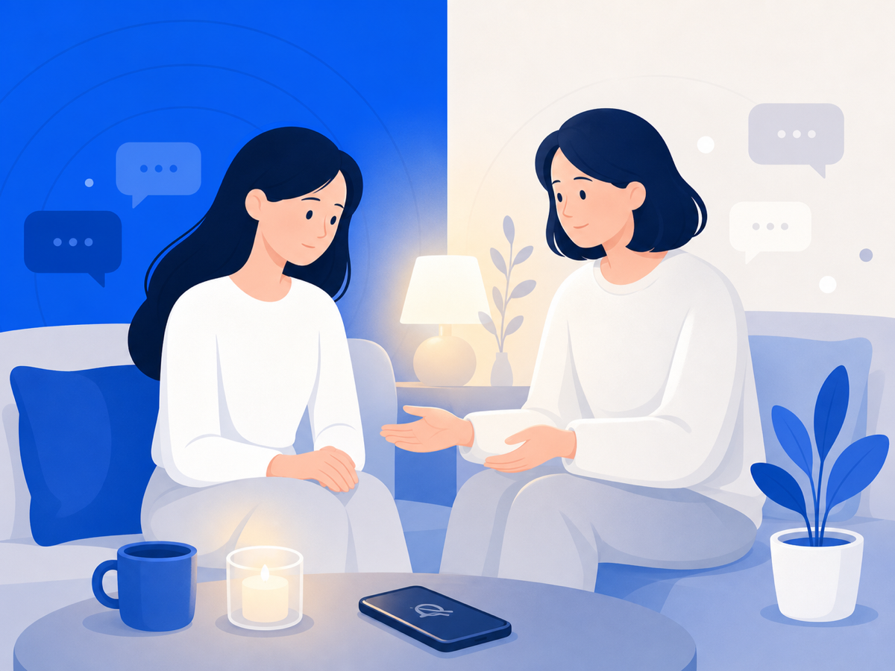
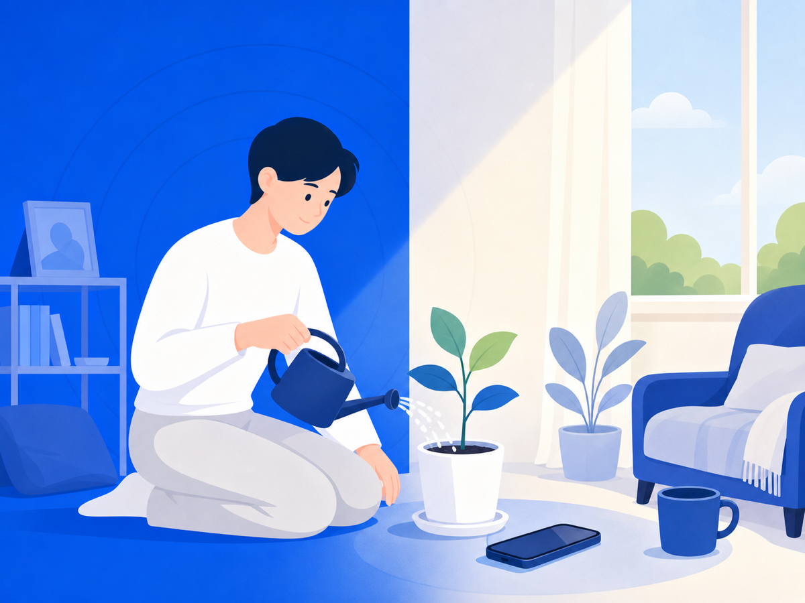
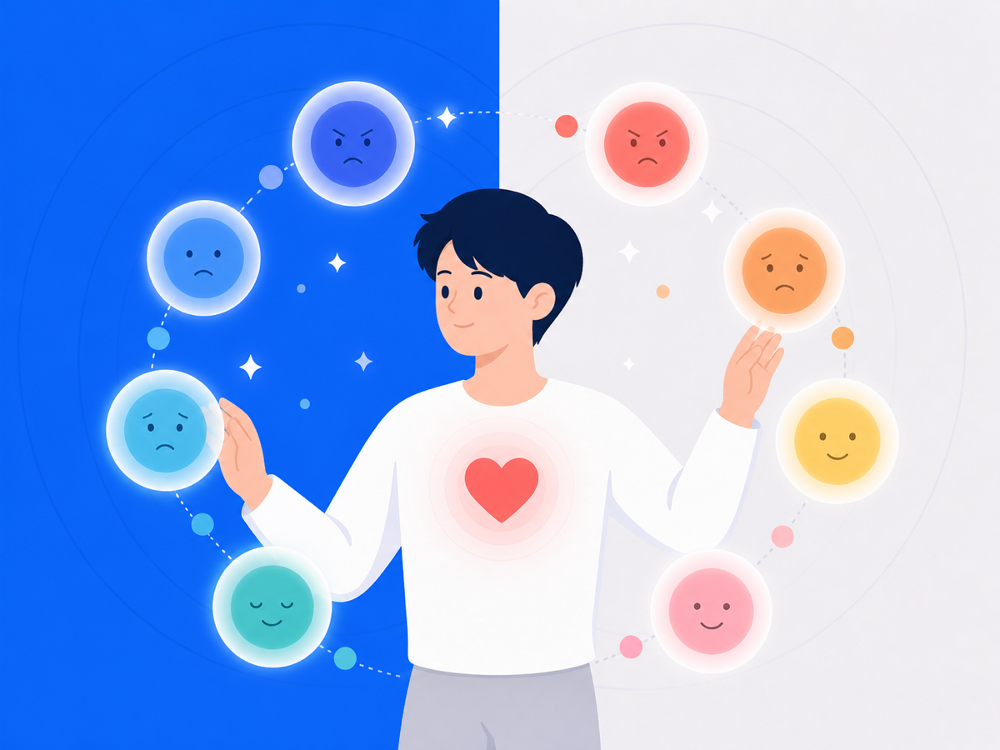
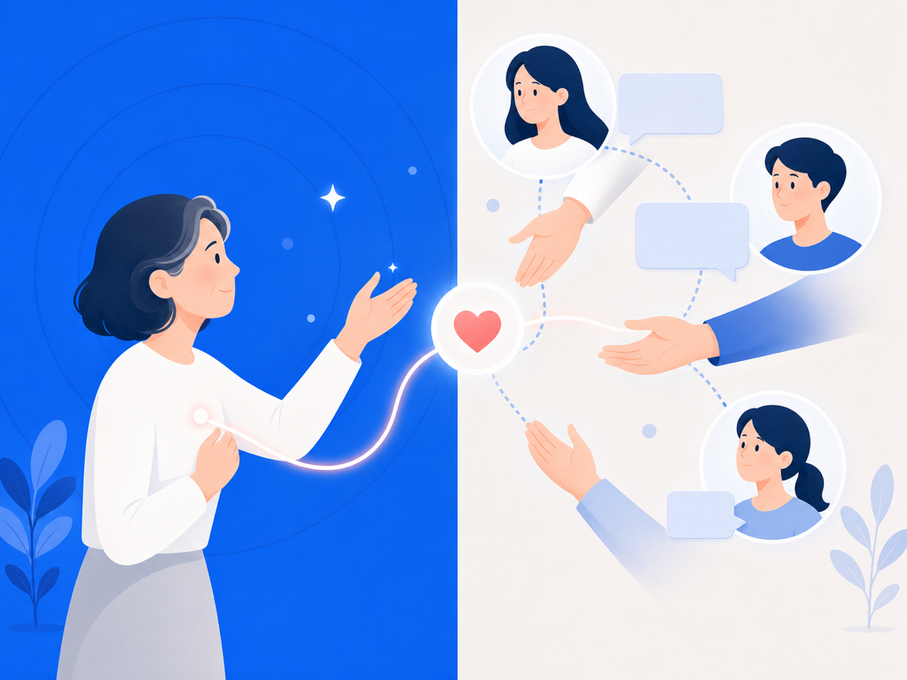

인포커터 블로그
악플이 왜 이렇게까지 아픈지, 그리고 어떻게 마음을 추스르는지. 모든 글은 실제 연구·자료를 바탕으로 합니다.
힘들 때는 혼자 두지 마세요 — 자살예방상담 109 (24시간)
마음과 회복
안 보려는데 왜 자꾸 또 열게 될까요악플을 다시 보는 건 의지 부족이 아니에요. 뇌가 위협에 반응하는 방식 자체가 그렇거든요.
무대 위에선 웃는데, 무대 아래선 어떤 말을 감당하고 있을까요공인이 받는 악성 댓글의 규모와 그 심리적 무게를 절제된 시선으로 살펴봐요.
"'그만 보기'는 회피가 아니라 자기 보호예요"전문가들이 사이버폭력 피해의 1차 대처로 권하는 건 '차단하고 안 보기'예요. 근데 증거 때문에 봐야 한다는 모순이 생기죠. 그 모순을 푸는 방법이 있어요.
사이버불링 피해, 어디서부터 시작하면 될까요막막할 때 하나씩 밟을 수 있는 5단계 흐름을 정리했어요. 할 수 있는 일이 분명히 있어요.

"가까운 사람이 악플 피해를 겪고 있을 때, 어떻게 곁에 있어줄까요"좋은 의도로 한 말이 오히려 상처가 되기도 해요. 함께할 수 있는 실질적인 방법을 정리했어요.

아이가 사이버불링을 겪고 있다면 — 부모와 학교가 먼저 할 일사이버불링은 학교가 끝나도 멈추지 않아요. 부모와 학교가 먼저 공감하고, 증거를 확보하고, 정해진 절차를 밟으면 아이를 실질적으로 도울 수 있어요.

악플 뒤에도 다시 일어설 수 있어요 — 회복탄력성에 대해악플 이후 "내가 잘못한 걸까"라는 생각이 든다면 — 그건 약한 게 아니에요. 회복탄력성은 타고나는 게 아니라, 조금씩 만들어가는 거거든요.
"그냥 공유했을 뿐인데" — 방관이 피해를 키우는 방식악플을 퍼나르거나 구경하는 것도 피해를 키울 수 있어요. 2차 가해가 뭔지, 그리고 내가 할 수 있는 가장 작은 실천을 이야기해요.
악플에 무너지는 건 당신 탓이 아니에요 — 뇌가 원래 그래요칭찬은 흘려보내면서 비난만 박히는 건 의지력 문제가 아니에요. 뇌가 그렇게 설계되어 있거든요.

마음이 다시 숨 쉬게 하는 작은 방법들악성 댓글로 상처받은 뒤 다시 평온을 찾는, 작고 구체적인 방법들이에요.
내 안의 목소리가 너무 가혹하다면 — 자기 자비 이야기악플을 반복해서 읽다 보면 남이 던진 말이 어느새 내 목소리가 돼요. 자기 자비가 그 고리를 끊는 방법을 이야기해요.

SNS 볼수록 내가 초라해지는 이유 — 비교의 함정피드를 내리다 마음이 무거워진 적 있죠? 그건 의지 문제가 아니에요. 비교가 뇌의 기본값인 이유, 그리고 그 굴레에서 조금 벗어나는 방법을 이야기해요.

감정에 이름을 붙이면 뇌가 진짜로 달라져요 — 정서 명명"화난다", "무섭다"고 말하는 것만으로 뇌의 경보 반응이 줄어든다는 걸 fMRI로 확인했어요. 감정에 이름을 붙이는 힘, 비유로 쉽게 풀어봤어요.
그 감정, 글로 꺼내봐요 — 표현적 글쓰기의 힘힘든 감정을 15분 동안 글로 쓰는 일이 심리적 정리에 도움 될 수 있다는 연구가 있어요. 악플로 쌓인 마음의 짐을 글로 내려놓는 방법을 이야기해요.

도움을 청하는 게 용기인 이유 — 사회적 지지의 과학혼자 앓는 게 더 강해 보이지만, 연구는 그게 오히려 회복을 늦춘다고 해요. 사회적 지지가 스트레스를 어떻게 완충하는지 이야기해요.
사이버폭력은 다시 늘고 있어요 — 당신만의 일이 아니에요2024년 실태조사에서 사이버폭력 경험률이 다시 올랐어요. 지금 겪는 일이 특별한 불운이 아니라는 얘기예요.

악플이 정말 힘든 건, 감정이 안 꺼지기 때문이에요사이버폭력이 우울·불안으로 이어지는 길목엔 '감정조절'이 있다는 2026년 연구. 안 보기가 왜 소극적 대응이 아닌지 이야기해요.

SNS는 끊는 게 아니라, 안전장치가 필요해요2025년 Pew 조사를 보면 SNS는 좋은 연결과 해로운 노출이 한 화면에 섞여 있어요. 그래서 필요한 건 단절이 아니라 보호장치예요.

왜 상처받는 걸 알면서도 또 확인할까요안 보겠다 해놓고 또 열게 되는 건 약해서가 아니에요. 불안과 확인 충동이 얽힌 루프 때문이라는 2026년 연구를 풀어봐요.

딥페이크 피해는 한 번 삭제로 끝나지 않아요디지털 성범죄 피해지원은 삭제 한 번으로 끝나지 않아요. 재유포라는 긴 꼬리, 그리고 악플도 닮은 구조라는 이야기예요.
피해자가 직접 찾는 방식은 오래가지 못해요 — AI 삭제지원이 보여준 방향서울시의 AI 삭제지원 사례는 피해지원이 '직접 견디기'에서 '덜 마주치기'로 옮겨가고 있음을 보여줘요.

악플이 아픈 건 과장이 아니에요 — 사회적 고통의 뇌과학거절과 배제는 뇌에서 신체적 고통과 겹치는 회로를 켠다는 연구들이 있어요. 악플이 왜 몸으로도 느껴지는지 풀어봐요.
신고 버튼만으로는 부족해요 — 신고와 처리 사이의 빈틈신고하고 처리되기 전까지 피해자는 계속 노출돼요. 그 빈틈에서 나를 지키는 '나에게 맞는 안전'에 대한 이야기예요.
증거와 법
캡처 한 장, 법원에서도 통할까 — 동일성·무결성이 뭔지 알면 달라져요스크린샷이 법정에서 효력을 갖추려면 '동일성'과 '무결성'을 증명해야 해요. 해시값이 그 핵심이고, 단순 캡처가 약한 이유도 여기에 있어요.

명예훼손이에요, 모욕이에요? — 한 끗 차이가 처벌 수위를 바꿔요온라인에서 받은 상처가 명예훼손인지 모욕인지에 따라 적용 법률과 처벌이 달라져요. 핵심은 '구체적인 사실을 적었는가'예요.
사이버 명예훼손 고소, 어디서 어떻게 시작하면 될까요증거 수집부터 ECRM 온라인 접수, 경찰서 방문까지 — 확인된 절차를 단계별로 정리했어요.

캡처를 진짜 증거로 만들려면 — 증거보전·공증, 어떻게 다른가요악플이나 명예훼손 게시물은 언제든 삭제될 수 있어요. 삭제 전에 증거를 안전하게 확보하는 방법 — 자가 캡처의 한계, 증거보전 신청, 공증, 내용증명의 의미를 정리했어요.
신고 버튼만 눌렀다가 증거도 사라질 수 있어요플랫폼에 신고해도 게시글이 사라지면 증거도 사라져요. 지워지기 전에 내가 먼저 보존해야 하는 이유를 정리했어요.
단톡방에서 한 말도 처벌될 수 있어요 — '공연성'이 핵심이에요비공개 단톡방이나 익명 게시판이라도 명예훼손이 성립할 수 있어요. '공연성'과 전파가능성 법리가 어떻게 작동하는지 확인된 조문·판례로 정리했어요.
딥페이크 피해, 어디에 신고하고 어떻게 대응하나요AI 합성 이미지와 딥페이크가 명예훼손·성범죄 도구로 악용되고 있어요. 처벌 법조와 신고 경로, 증거 확보 방법을 확인된 정보로 정리했어요.
캡처만으로는 부족할 수 있어요 — 디지털 증거의 핵심대법원 판례는 디지털 증거에서 '원본과 같은가'를 증명하라고 해요. 악플 증거도 처음 저장하는 방식이 중요한 이유를 풀어봐요.

전 세계가 '빨리 지워라' 쪽으로 움직이고 있어요미국 TAKE IT DOWN Act는 플랫폼에 48시간 삭제 의무를 지웠어요. 삭제를 기다리는 동안에도 할 수 있는 게 있다는 이야기예요.